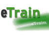

Closed Projects
eTrain, subproject 3: videocommunication in learning platform
Description
The audio technology developed in this project and video technology allows the call of a web server about a plug-in in the browser, that is: without installing additional software. In this way the greatest possible flexibility is reached in the learning process. Participants of lectures or continuing education arrangements are thereby able
- to pursue lectures live in own calculator,
- to intervene passively about video and/or audio in the work of a whole seminar group,
- to work actively with other participants,
- to tape the activities for the later posttreatment and deepening the material,
- to work in parallel with video communication with other participants together on projects (Application Sharing),
- to transfer files.
The development of the video communication in the learning main entrance is a part of the project eTrain within whose favourable basic conditions of a narrower collaboration between enterprise and colleges are created in the continuing education.
Purpose is to allow an easy on-line access to knowledge supplies and teaching offers of the FHTW Berlin. In the project eTrain the FHTW Berlin is equipped with the necessary equipment of which is available for all teachers of all departments. Trainings to the use complement the draught.